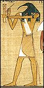
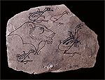
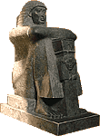

The Old Master Scribe
 Click on the pictures
Click on the pictures |
The old master scribe settled onto his reed mat and looked at the boy sitting in front of him. 'Why have you come here?' he asked. 'I have come to learn how to be a scribe like my father was,' the boy said.
|
The old man smiled, 'If you want to be a scribe, you must first learn about the scripts used to record the language of the Egyptian people. Then, you will learn to read and write these scripts.' He paused, then closed his eyes. A minute passed. Then he began to speak in a low voice. 'I will start at the beginning.'
'A long, long time ago, Thoth, the great god of writing and knowledge brought the gift of Medu Netjer ('God's words') to the land. For hundreds of years this sacred script has been used to record the words and deeds of the pharaohs and the gods and goddesses.'
For hundreds of years this sacred script has been used to record the words and deeds of the pharaohs and the gods and goddesses.'
'If the script was sacred, what did scribes use for writing letters?' the boy asked.
 The old master scribe continued .'Some years later, another script was developed so that everyday information could be written down quickly and easily. It was used by scribes working in the temples and palaces who need to keep records and write letters.' He paused.
The old master scribe continued .'Some years later, another script was developed so that everyday information could be written down quickly and easily. It was used by scribes working in the temples and palaces who need to keep records and write letters.' He paused.
'The signs for the new script were based on those of the sacred script. However, they were drawn with fewer lines and decoration. That made it easier and faster to write the signs.'
The old master scribe picked up a reed pen and carefully drew the hieroglyphic sign  on a piece of limestone. Next to it, with a quick sweep of his hand, he drew the same sign in hieratic
on a piece of limestone. Next to it, with a quick sweep of his hand, he drew the same sign in hieratic  .
.
He showed it to the boy. 'Do you see the difference?' he asked. The boy studied the signs and nodded his head.
 'Today, in the reign of Wehemibra (Nekau II), we do not use the hieratic script that much anymore. Our common script is sekh shat, ('writing for documents'). The signs are based on hieratic signs, but they are even simpler. This makes them faster and easier to write.'
'Today, in the reign of Wehemibra (Nekau II), we do not use the hieratic script that much anymore. Our common script is sekh shat, ('writing for documents'). The signs are based on hieratic signs, but they are even simpler. This makes them faster and easier to write.'
The old master scribe paused and wiped his brow. 'As a scribe you are given the power and knowledge of writing. First, you must learn the common script of the land so you can perform everyday tasks. After that, if you are lucky and talented, you will also learn the sacred script. Those who learn the sacred script will learn the secrets of the gods and the mysteries of the land.'
The old master scribe reached behind him and brought out a small wooden palette. He held it out to the boy. 'This is for you. Once you have learned to read and write, you will have many opportunities in the world. Practise your signs well and you will go far.' Then, he stood up.
The boy said goodbye to the old master scribe and left his home. For many years he studied to be a scribe, practising his signs for hours every day. It was difficult work, and sometimes he hated school. But he worked hard.
Finally, he was ready to leave scribe school. He had done well and was offered a position as a priest in a temple.
Long after the old master scribe had died, the young man still thought about their meeting. He never forgot what the old man had taught him about the importance of learning the scripts, and the honour of being a scribe.